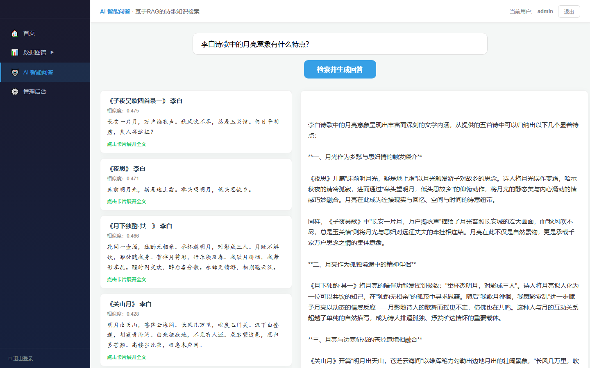
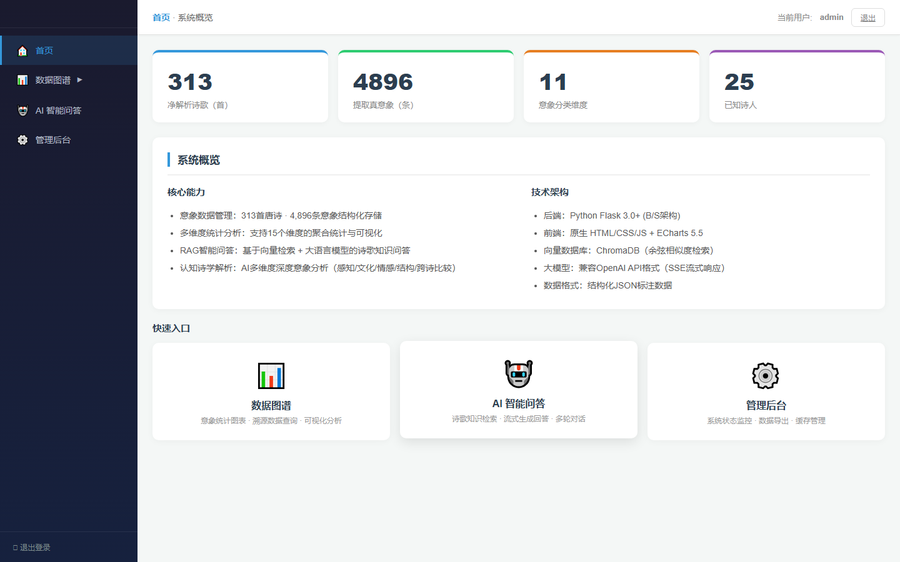
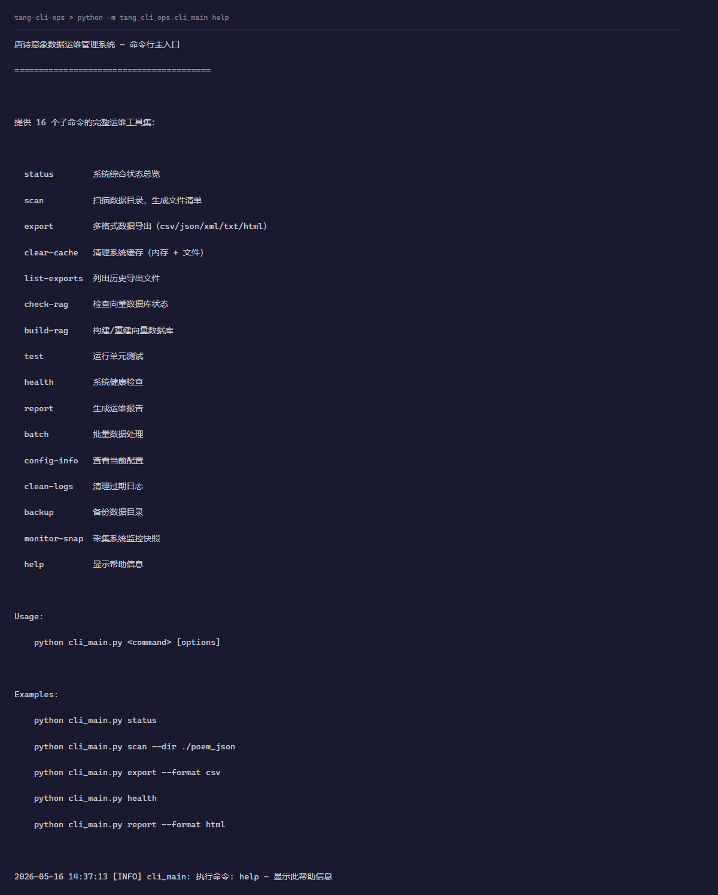
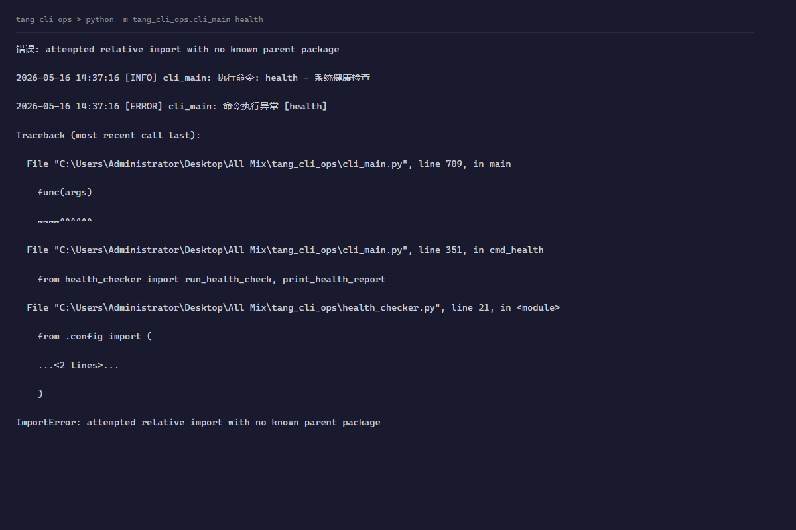

Classical Poetry Imagery Analysis System
Full-Stack Web App + RAG Pipeline + Prosody Engine
An end-to-end system that ingests raw classical Chinese poetry text, runs it through a chained analysis pipeline (parsing → prosody checking → imagery extraction → vector embedding), and surfaces results in an interactive Flask dashboard with ECharts visualization and LLM-powered Q&A.

Poem Lab — LLM Annotation Engine
Three-Phase Meta-Prompting Pipeline + Batch Processing
A production-grade annotation system that takes natural language requirements, auto-designs a labeling schema, generates specialized prompts, and coordinates parallel LLM calls to produce structured outputs. Features checkpoint/resume, quality scoring, and SSE-based progress streaming.


TangCLI — Agent-Driven Operations Toolkit
CLI + Agent Loop + Tool Registry + Web Dashboard
A natural-language-driven CLI for managing poetry data operations. Uses an Agent Loop pattern: user intent → LLM reasoning → function-calling tool selection → execution. Includes 15 subcommands, an interactive REPL mode, and a Flask-based web dashboard for remote monitoring. Packaged as a standalone executable via PyInstaller.


AI-Assisted Development Workflow Engine
Agent Memory System + Change Tracking + Skill Orchestration
A meta-tool built on LLM Agent infrastructure that captures every code change, persists project knowledge across sessions, and maintains a dual-track iteration log (code changes + strategic thinking). Includes 9 custom skills packaged as a standardized plugin marketplace — transforming the AI from a one-shot tool into a continuously accumulating development partner.